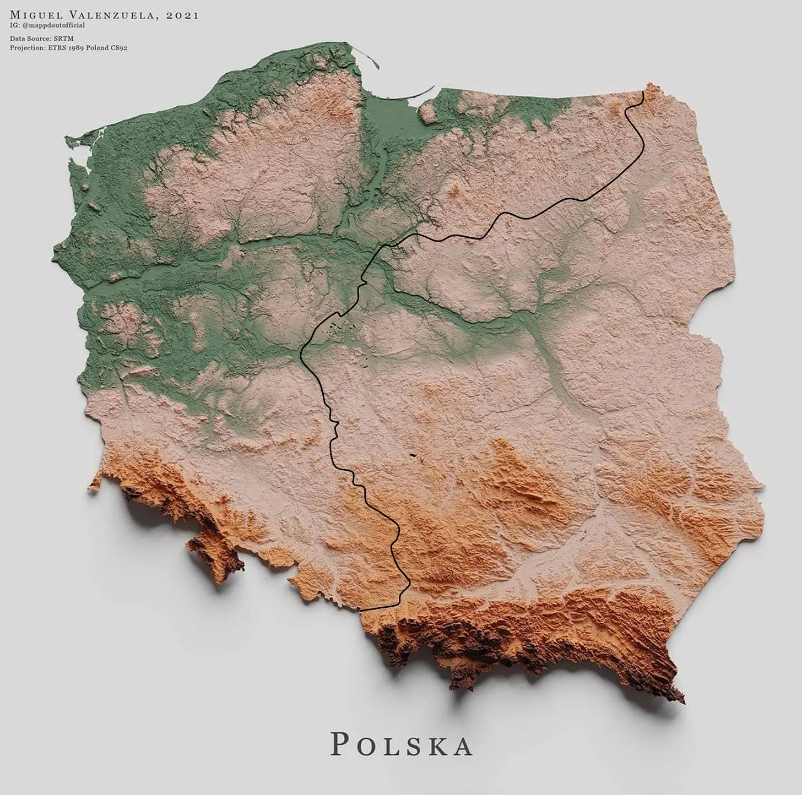
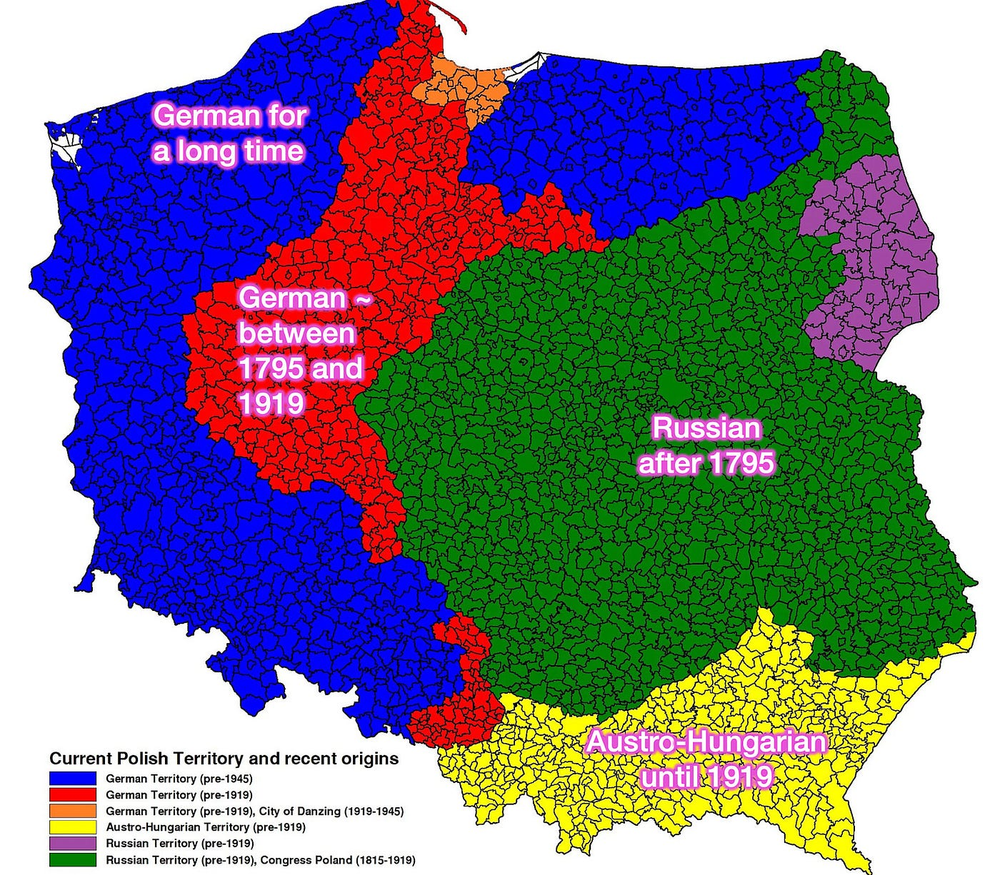
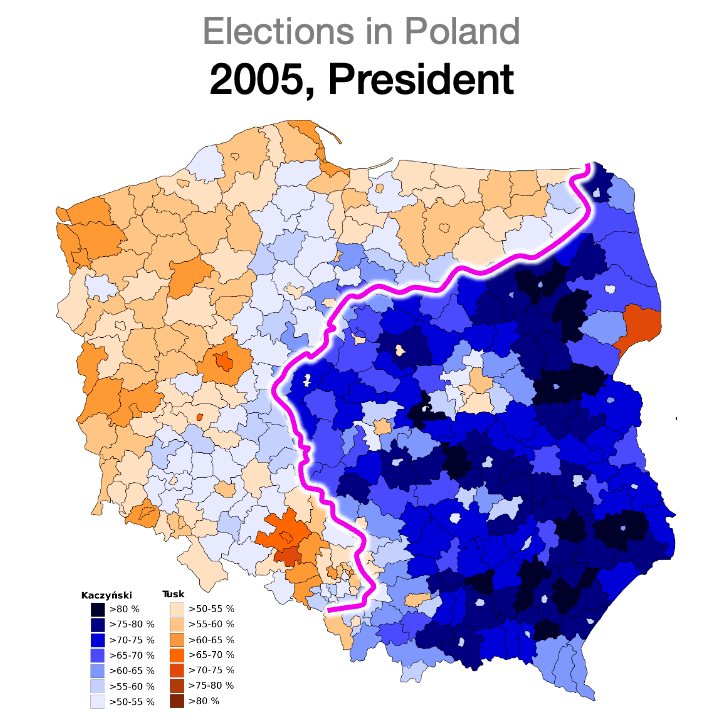

| Столиця | Варшава | Форма правління | Парламентсько-президентська республіка |
|---|---|---|---|
| Площа | 312 696 км² | Населення | ~38.0 млн (2024) |
| ВВП (ном.) | ~0.75 трлн $ (2024) | ВВП на душу | ~19 800 $ (2024) |
Економіка: Сектори та Структура
| Структура ВВП (за секторами) | Сектор | Ключові галузі та спеціалізація | |||||
|---|---|---|---|---|---|---|---|
|
|
Первинний (~3% ВВП) |
|
|||||
|
Вторинний (~39% ВВП) |
|
||||||
|
Третинний (~58% ВВП) |
|
Демографія: Старіння та Міграція
Польща, як і більшість країн Європи, переживає процес "старіння нації". Однак, на відміну від Італії, її піраміда дещо молодша. Ситуацію на ринку праці та в демографії суттєво коригує масова імміграція, в першу чергу з України.
Економічне диво Польщі
Польща — приклад успішної посткомуністичної трансформації. Після "шокової терапії" на початку 1990-х та вступу до ЄС у 2004 році, країна уникла рецесій та стабільно зростала, ставши "економічним тигром" Європи.
| Ключові етапи | Характеристика |
|---|---|
| "Шокова терапія" (1990) | План Бальцеровича: швидкий перехід до ринкової економіки, лібералізація цін, приватизація. |
| Вступ до ЄС (2004) | Доступ до Єдиного ринку, масштабні інвестиції з фондів ЄС, модернізація інфраструктури. |
| Сучасність | Диверсифікована економіка, інтегрована у німецькі промислові ланцюги. |
Історичний контекст
Розуміння сучасної Польщі неможливе без усвідомлення її історичної ролі між Сходом та Заходом. Країна тривалий час була об'єктом поділів, що пояснює її моноетнічність та особливе ставлення до суверенітету.


Вплив українських мігрантів на економіку
Українська міграція (особливо після 2014 та 2022 років) має колосальний вплив на економіку та демографію Польщі, вирішуючи ключові проблеми ринку праці.
| Сфера впливу | Деталі |
|---|---|
| Ринок праці | Заповнення дефіциту робочих рук у секторах будівництва, логістики, промисловості та послуг. |
| Внесок у ВВП | За різними оцінками, українські трудові мігранти генерують від 1% до 2.5% річного зростання ВВП Польщі. |
| Демографія | Притік молодшого населення суттєво сповільнює процес "старіння нації" у Польщі. |
| Підприємництво | Після 2022 року українці відкрили в Польщі десятки тисяч ФОП (JDG) та компаній, створюючи нові робочі місця. |
| Соціальна система | Працюючі українці сплачують значні внески до ZUS (система соціального страхування), підтримуючи її стабільність. |
Відносини з Україною: Складне сусідство
Відносини між Польщею та Україною є стратегічним партнерством, яке, однак, періодично ускладнюється через економічні суперечки та різне трактування спільної трагічної історії.
Стратегічний адвокат
- Один з найбільших військових та гуманітарних донорів України.
- Ключовий логістичний хаб для постачання західної допомоги.
- Головний лобіст надання Україні статусу кандидата в ЄС у 2022 році.
- Надала прихисток мільйонам українських біженців, інтегрувавши їх у соціальну систему.
Партнерство та конкуренція
- Один з найбільших торговельних партнерів України в ЄС.
- Проблема зернової кризи: Блокування кордону польськими фермерами та перевізниками через конкуренцію з українською агропродукцією на ринку ЄС.
- Польський бізнес активно інвестує у Західну Україну.
Війна пам'яті
- Волинська трагедія (1943-44): Найбільш болюча тема. У Польщі кваліфікується як "геноцид" (ludobójstwo), в Україні – як частина ширшого конфлікту з обопільними жертвами.
- Питання ОУН/УПА: Різне ставлення до постатей Степана Бандери та Романа Шухевича.
- Війна пам'ятників: Періодичні конфлікти через руйнування або встановлення пам'ятних знаків.
- Висновок: Стратегічне партнерство сьогодення існує паралельно з глибокими історичними травмами.
Цікаві факти
-
🇵🇱
Історія: Польща була тричі розділена між Росією, Пруссією та Австрією (1772, 1793, 1795) і зникала з мапи світу на 123 роки.
-
⚛️
Наука: Польща є батьківщиною Миколая Коперника (астроном) та Марії Склодовської-Кюрі (єдина жінка-лауреат Нобелівської премії у двох різних науках).
-
🎮
Ігрова індустрія: Польща — світовий лідер з розробки відеоігор. Студія CD Projekt RED створила культові ігри "Відьмак" (The Witcher) та "Cyberpunk 2077".
-
🏰
UNESCO: В Польщі 17 об'єктів Світової спадщини ЮНЕСКО, включаючи історичні центри Кракова та Варшави, соляну копальню "Величка" та Біловезьку пущу.